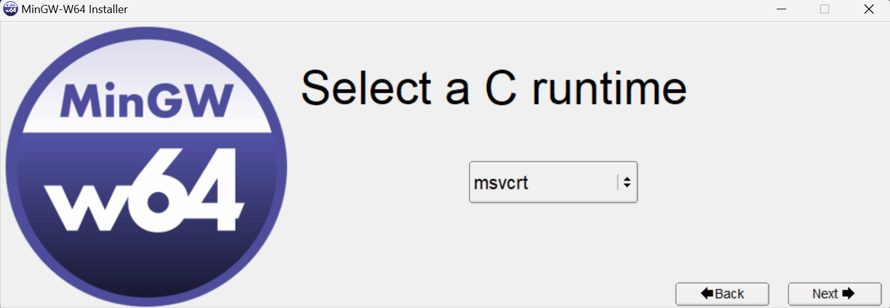

2章 MinGWのインストールと設定
目次に戻る
インストール作業 まず初めにこのサイト にアクセスしてMinGWのインストールを行います。
上の画像の矢印で示されいているMinGW-W64 online installer という文字をクリックしダウンロードを開始します。
ダウンロードが完了したらダウンロードしたファイルを開きます。
ファイルを開くとこのような警告が出ると思いますが問題ないので、実行 を押します。
このような画面が表示されたら，そのままNext→ を押してください。
バージョンの選択画面が表示されたら13.2.0 を選択しNext→ を押してください。
画像のような画面が表示されたら64bit を選択しNext→ を押してください。
次の画面ではwin32 を選択してNext→ を押します。
ここではすでにrev1 が選択されていると思うのでそのままNext→ を押してください。

ここでもすでにmsvcrt が選択されていると思うのでそのままNext→ を押してください。
この画面でMinGWを保存する場所を決めますが、C:/Users/ユーザー名/ になっているかを確認して下さい。違う場合はchooseから変更してください。選択できていることが確認ができたら、Process を押してそのままインストールしてください。終了後finish を押してパソコンを再起動したらインストール作業は終了です。
pathの設定
次にpathの設定を行います。PC画面下のタスクバーかウィンドウズボタンを押して、検索画面に環境変数 と入れて，環境変数の編集 を開きます。
この画面が表示されたら、矢印で示しているpathを選択し編集を押します。
この小ウィンドウが表示されたら新規 を押して、C:/Users/ユーザー名/mingw64/bin と入力すします。このときユーザー名の部分を必ずあなたの名前に変更してください。登録ができたらOKを押して画面をすべて閉じたらパソコンを一度再起動します。
再起動が終わったらターミナル（コマンドプロンプト）を先ほどと同様に検索窓から検索して開きます。
コマンドプロンプトでgcc -version
この出力が表示されて入ればMinGWの設定は終了です。
設定ができていない場合 先ほど使用したコマンドプロンプトのプラスマークの横のマークからか検索窓から検索をしてWindows PowerShell を開きます。そこで$END:PathC:/Users/ユーザー名/mingw64/bin があるかを確認し，なければ，$ENV:Path="C:/Users/ユーザー名/mingw64/bin"
これでも解決しない場合は、エラーや状態を検索するか、もう一度pathの追加の部分からやり直してみてください。
3章 Visual Studio Codeのインストールと設定
まず初めにこちらのリンク にアクセスしてインストーラーをダウンロードし、MinGWと同様に実行します。この時Windowsのパソコンを使っている場合は、選択肢の一番左側にあるWindowsの大きいボタンをクリックしてください。
先ほどのMinGWと同様に同意や保存先の選択などを行います。特に好みがない場合はデフォルトで問題ありません。一つだけ途中の選択で、追加タスクの選択 の画面はすべてチェックを入れることを推奨します。
インストールがすべて終わったら、Visual Studio Codeを開きます。ここからはプログラムをするのに必要な拡張機能の設定を行っていきます。
まず日本語の表示設定を行います。上の画像の矢印で指しているアイコンをタップしJapanese Language Pack for Visual Studio Code と検索してください。
上の画像の拡張機能を見つけクリックし、install を選択します。インストールが完了したら、アプリの再起動を行います。画面右下にChange Language and Restart という案内が出てくると思うので、それを押して再起動すると日本語の画面が表示されると思います。このような案内が出てこない場合は各自手動で再起動を行ってください。
次にC/C++を動かすのに必要な最低限の拡張機能を紹介します。拡張機能は今回紹介するもの以外にも、全角を検知して指摘してくれたりプログラミングをする上で、必要なサポートをしてくれるものがそろっているので、各自調べてインストールしてみてください。
> C/C++ Extension Packをインストールしてください。ここでは再起動等の処理は必要ありません。
次にCode Runnerをインストールします。ここまで同様にインストールをしたら、画像の矢印に示す歯車マークをクリックし、拡張機能の設定 を選択します。
設定画面をスクロールして画像に示している、Run in Terminal にチェックを入れます。
これでVisual Studio Codeの設定は終了です。ここからは一度実行できるかを確認していきます。
上記の画像の矢印に示す部分をクリックして任意ののフォルダーを開いて下さい。
画像を参考にsample.cppというファイルを作成して、下記のコードを貼り付けてください。
コピー
#include <iostream>
using namespace std;
int main() {
cout << "Hello world" << endl; //Hello worldを出力
return 0;
}
これはC++でHello Worldを出力するプログラムです。プログラムを貼ったら、画像に示した三角ボタンの横のマークをクリックし、Run Code を選んで実行します。画像のような出力が得られれば成功です。
4章 文字化け防止の設定
先ほどHello World と出力したと思いますが、これを下記のようなコードに書き換えてみてください。
コピー
#include <iostream>
using namespace std;
int main() {
cout << "こんにちは" << endl; //こんにちはを出力
return 0;
}
先ほどと同様に出力しようとすると画像のような出力になったかと思います。何も設定を行わずに全角文字を出力しようとすると文字化けが起こるのでその直し方を説明します。
4章で説明したCode Runnerの設定に進み、Code-runner: Executor Map を探してその下にあるsetting.jsonで編集 をクリックします。
矢印で示した2行を変更していきます。まず画像の12行目C言語の設定をしていただきます。デフォルトではダブルクオーテーション内が"cd $dir && gcc $fileName -o $fileNameWithoutExt && $dir$fileNameWithoutExt"
コピー
"cd $dir && gcc -fexec-charset=CP932 $fileName -o $fileNameWithoutExt && $dir$fileNameWithoutExt"
次に画像の13行目C++の設定をしていただきます。デフォルトではダブルクオーテーション内が"cd $dir && g++ $fileName -o $fileNameWithoutExt && $dir$fileNameWithoutExt"
コピー
"cd $dir && g++ -fexec-charset=CP932 $fileName -o $fileNameWithoutExt && $dir$fileNameWithoutExt"
これで文字化けが解消されると思います。もう一度おはようを出力してみてください。もし解消されない場合は、エラーや状態を検索するか、もう一度設定の部分からやり直してみてください。